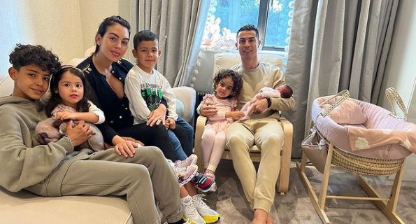

Cristiano Ronaldo y su actual pareja Georgina Rodríguez comenzaron su relación en 2016 y, desde entonces, han formado una hermosa familia. Con el nacimiento recientemente de una pequeña, el astro del fútbol cuenta ahora con cinco hijos: el mayor, Cristiano Jr., de 11 años; los mellizos Eva y Mateo, nacidos de un vientre de alquiler; la pequeña Alana Martina, la primera hija en común del deportista con Georgina, así como también, a finales de octubre de 2021 anunciaron que tendrían gemelos a través de sus redes sociales, donde compartieron la imagen de los ultrasonidos de los bebés y su felicidad al mundo entero. Sin embargo, meses después, esa alegría se tornó en tristeza cuando uno de ellos perdió la vida. |
|  |
|---|
Volver arriba
| Lugar actual de residencia | |
|---|---|
Cristiano Ronaldo vive en una lujosa mansión situada en Los lagos de La Finca, en Pozuelo de Alarcón, Madrid. La parcela donde está situada la vivienda tiene una extensión de unos 5 mil m2, de los cuales cerca de 1000 corresponden a la mansión. |
Diseñado por: Noelia Olea Zavaleta
Para mayor información  |
|